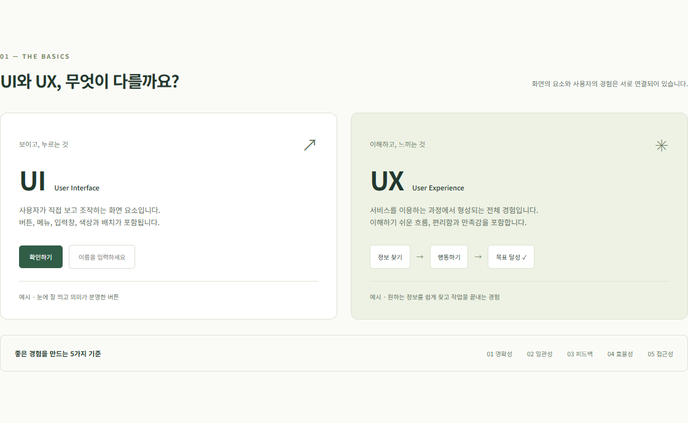

화면에 보이는 요소
UIUser Interface
메뉴, 버튼, 입력창처럼 화면에 보이는 것이 UI입니다.
이 버튼을 누르면 목표 입력으로 이동합니다.
UI/UX PROGRAMMING · WEEK 07
사용자 흐름과 인터랙션 시나리오
학습 계획 세우기 과제 내용 보기 ↓시작 → 입력 → 선택 → 확인 → 완료
01 — ASSIGNMENT
6주차 페이지에 학습 계획 흐름을 추가했습니다.

02 — PRACTICE
개념 비교, 코드 예제, 클릭과 피드백.
화면 요소(UI)와 사용 경험(UX)을 비교합니다.
개념 예제 보기HTML, CSS, JavaScript 탭을 눌러 코드를 확인합니다.
코드 예제 보기버튼을 누르면 숫자와 메시지가 바뀝니다.
인터랙션 예제 보기탭을 눌러 예제를 확인하세요.
메뉴, 버튼, 입력창처럼 화면에 보이는 것이 UI입니다.
이 버튼을 누르면 목표 입력으로 이동합니다.
목표를 정하고 예제를 체험하는 과정 전체가 UX입니다.
다음에 할 일이 바로 보이는지 확인해 보세요.
탭을 눌러 HTML, CSS, JavaScript 코드를 비교합니다.
HTML은 제목, 문단, 링크로 구조를 만듭니다.
<section id="about">
<h2>과제 소개</h2>
<p>HTML 구조와 내부 이동 실습</p>
<a href="#features">실습 내용 보기</a>
</section>버튼을 누를 때마다 숫자와 메시지가 바뀝니다.
아직 누르지 않았습니다.
03 — STEPS
목표 작성 → 예제 확인 → 직접 실행
학습 계획에서 목표를 적고 예제와 시간을 고릅니다.
실습 내용 탭에서 개념과 코드 예제를 확인합니다.
버튼을 눌러 화면이 바뀌는지 확인합니다.
0 / 3단계 완료